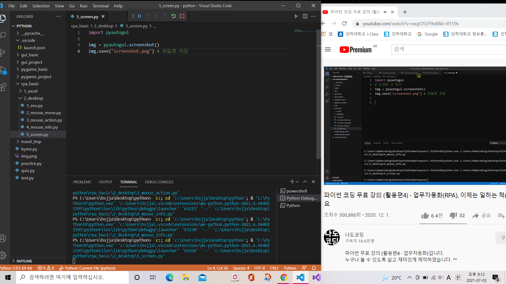

Python is an interpreted high-level general-purpose programming language. Python's design philosophy emphasizes code readability with its notable use of significant indentation. Its language constructs as well as its object-oriented approach aim to help programmers write clear, logical code for small and large-scale projects.
Python is dynamically-typed and garbage-collected. It supports multiple programming paradigms, including structured (particularly, procedural), object-oriented and functional programming. Python is often described as a "batteries included" language due to its comprehensive standard library.
Guido van Rossum began working on Python in the late 1980s, as a successor to the ABC programming language, and first released it in 1991 as Python 0.9.0.
Python 2.0 was released in 2000 and introduced new features, such as list comprehensions and a garbage collection system using reference counting. Python 3.0 was released in 2008 and was a major revision of the language that is not completely backward-compatible and much Python 2 code does not run unmodified on Python 3. Python 2 was discontinued with version 2.7.18 in 2020.